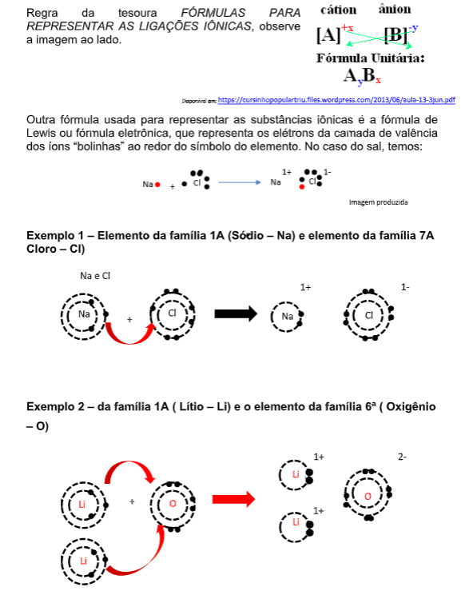
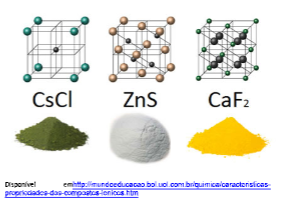
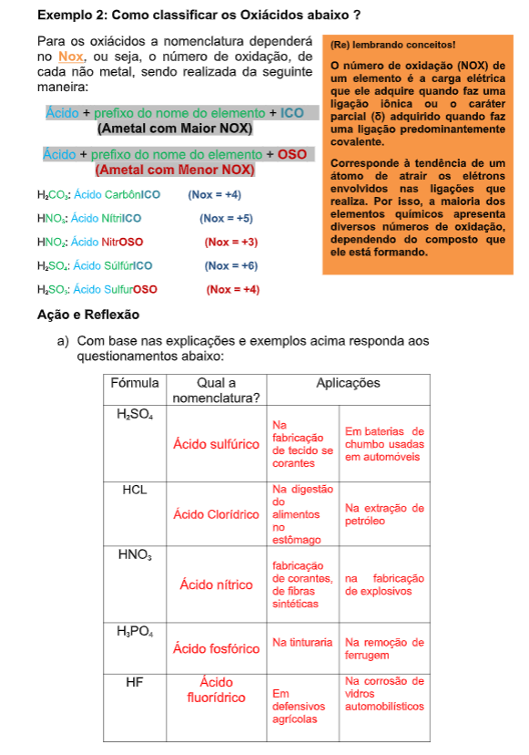

Capítulo 3
Movimentos com velocidade variável no setor na construção civil
Que conceitos da variação da velocidade são relevantes na construção civil? Como entender estes conceitos a partir de exemplos deste meio?
CONTEXTUALIZANDOFalar de movimentos na construção civil ficou um tema recorrente em nossas atividades de capítulos anteriores, mas isso tem um motivo, a relevância dos conceitos que envolvem o estudo dos movimentos quando aplicados na construção civil. O ajuste na velocidade por conta de cronogramas, ora aumentando a velocidade, ora diminuindo para não encerrar muito antes do prazo, estes ajustes revelam conceituações que precisam ser trabalhadas para se ter noção do todo, mesmo que na produção do clínquer para o cimento, até o ajuste do número de metros quadrados diários devem ser construídos. Diante destes pequenos exemplos, dentro do universo complexo que é administrar uma projeto civil a Física novamente pode dar respostas uma vez que têm dentro do estudo dos movimento uma parte que discute os casos de variação de velocidade no tempo, tal conceito já visto e conhecido como o fenômeno da aceleração. Os desdobramentos dela resultam em representações matemáticas características.
 (Re)construindo conceitos
Os movimentos na construção civil necessitam podem variar, adotaremos situações onde a velocidade se altera de modo uniforme em relação ao tempo que dá origem a um conceito conhecido como aceleração, e, é a partir dela que desenvolveremos os conceitos principais dos movimentos com velocidade variável, algumas situações serão omitidas por não servir diretamente ao nosso contexto. Agora que temos conhecimento do conceito de referencial, posição, deslocamento e velocidade podemos pensar em numa classificação para movimento com velocidade variável. Basearemos o desenvolvimento dos conceitos em sempre com questionamentos.
1ª pergunta: Como devemos pensar em movimentos que se afastam de nosso referencial com velocidade variável?
No caso de um MOVIMENTO PROGRESSIVO DESACELERADO a única coisa que muda é que a aceleração é negativa, pois a velocidade está diminuindo
Aplicando esta situação ao exemplo da empilhadeira, ela teria a ACELERAÇÃO NEGATIVA, ou seja, -2m/s 2 e também deveríamos considerar uma velocidade inicial diferente de zero, por exemplo 10m/s.
E a tabela que daria origem a representação matemática ficaria desta maneira

O QUE APRENDI
